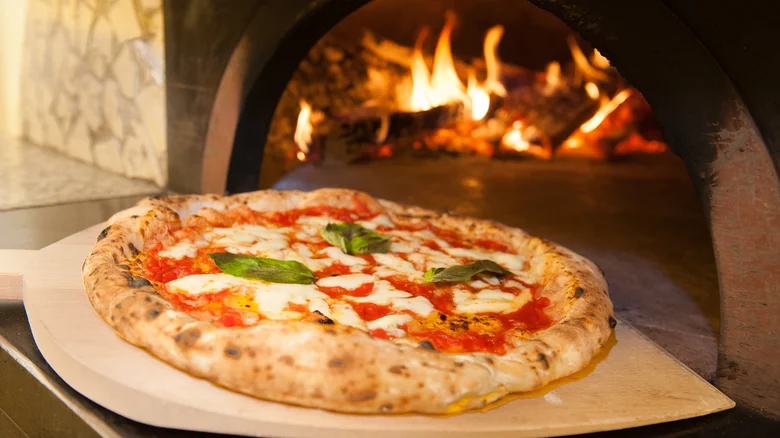
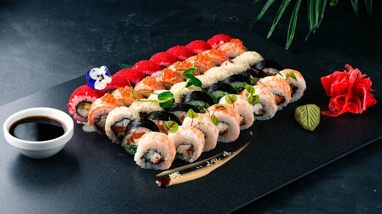
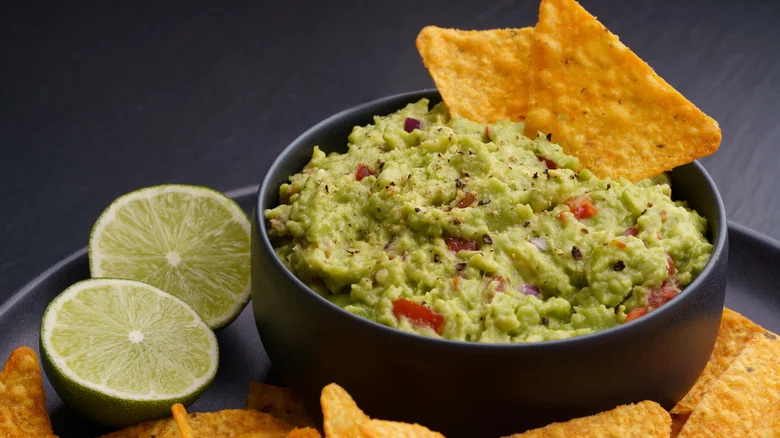
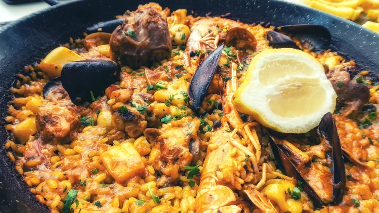
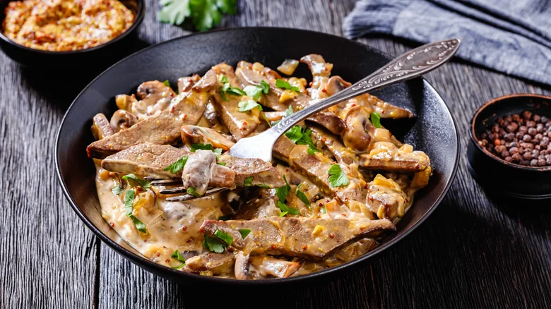

Prepare yourself for a mouthwatering journey around the world as we celebrate the exceptional dishes that have left their mark on the international culinary stage. From humble street food gems to elaborate fine dining delights, each dish has significantly impacted its home country and beyond, earning superstar status in the eyes of food lovers worldwide. Get ready to savor the flavors of these legendary dishes and discover the stories behind their rise to global fame.
you're an ambitious home cook or a food enthusiast seeking your next exceptional dining experience, this culinary journey will take you on a fascinating tour of the world's most famous and cherished dishes. From India's fragrant curry to Austria's golden wiener schnitzel, each dish has its own story to tell, evolving over time into the culinary classics we know and love. Join us on this gastronomic adventure that will inspire you and whet your appetite for these international masterpieces.
Pizza – Italy

The Italian pizza, an iconic and globally renowned dish, holds a special place as we kickstart our list of influential culinary creations. Originating in the vibrant streets of Naples, Italy, this beloved delicacy has transcended boundaries, leaving an indelible mark on gastronomy worldwide.
With humble origins tracing back to the early 1800s, pizza emerged as an affordable and satisfying meal for workers, featuring simple toppings. However, the pizza we are now all familiar with was served to Queen Margherita in 1889 on a visit to Naples. The chef at Pizzeria Brandi is said to have created a pizza topping of tomato, mozzarella, and basil, especially for the Queen, resembling the colors of the Italian flag. The pizzeria still stands today, marked by a plaque commemorating the event, and this iconic creation became known as the Margherita pizza.
As Italians immigrated to different corners of the world, they carried the secret to this irresistible creation. Pizza gained popularity in various countries, evolving and adapting to local tastes and ingredients, and 5 billion pizzas are now reportedly sold worldwide each year.
If you find yourself in Italy and looking for the ultimate pizza experience, try seeking out lesser-known, family-run restaurants away from the usual tourist routes. You may find a family recipe or unusual topping passed down through generations that will change your perspective on the perfect pizza. Just don't be surprised if your request for pineapple as a topping is met with disapproval!
Sushi – Japan

Ah, the delicate artistry of sushi, a visual masterpiece that is a testament to precision, freshness, and the pursuit of culinary perfection. Sushi has a history dating back to 2nd century China, where it was used as a preservation technique before making its way to Japan by the 8th century. Today, it is a culinary art form celebrated worldwide for its simplicity, elegance, and exquisite flavors.
One of the big attractions of sushi is its remarkable versatility. As it migrated beyond Japan's shores, sushi underwent fascinating adaptations. Though commonly associated with seafood, the concept of sushi has been extended to a vast array of ingredients, including vegan versions that utilize the vibrant colors and flavors of vegetables.
If you plan to make your own sushi, the freshness of ingredients is key. Opt for the highest quality seafood available, and select ripe and crisp vegetables to ensure ultimate texture. And know this: Perfect homemade sushi is possible, but it will take some practice.
Because sushi is so international, so immensely popular, you're bound to find a spot near you — and everyone always has their favorite sushi restaurant!
Guacamole – Mexico

Get ready for a zesty journey into Mexican cuisine with the classic guacamole. The ultimate in creamy richness, this side dish has become a symbol of Mexican food and a worldwide hit. The Aztecs created it in southern Mexico, and it has remained a popular dish in the country due to its superb flavor and the recognized health benefits of avocados.
Outside of Mexico, guacamole has made its mark on gastronomy around the world. Its popularity has soared recently, becoming a popular dip in various cuisines and inspiring creative interpretations.
The sheer brilliance of guacamole is that it achieves such an astonishing depth of flavor without even touching a stove! It all starts with perfectly ripe avocados mashed with a splash of onion, a fiery kick from a few chilis, and a generous squeeze of tangy lime. The result? A bowl brimming with zingy perfection. While many choose to incorporate fresh tomatoes and aromatic cilantro, the beauty of guacamole lies in its customizable nature, allowing you to tailor it to your taste preferences.
Guacamole makes the perfect accompaniment to so many dishes, including fajitas, tacos, quesadillas, and even a baked sweet potato. And let's be honest, it also makes a great snack eaten straight from the bowl on its own.
Paella – Spain

Enter the enchanting world of paella, a vibrant dish that embodies the essence of Spanish cuisine. With its bright colors, full-bodied flavors, and rich cultural heritage, paella has become an emblem of Spain while captivating tastebuds around the globe.
Hailing from sunny Valencia in the 18th century, Paella was initially eaten by farmers, taking advantage of the abundance of rice and fresh produce. 'La paella' was the name of the large pan the dish was cooked in, often over an open fire and enjoyed from the pan, without dishing into another bowl. Though the original recipe contained featured meat, paella has now become synonymous with seafood across the globe.
In Spain, paella has become a centerpiece of festive gatherings, symbolizing togetherness and celebration. Families and friends come together around the paella pan, engaging in lively conversations and indulging in the mouthwatering flavors of this beloved dish.
Beyond Spain's borders, paella has left a mark on international gastronomy. Chefs worldwide have embraced the essence of paella, incorporating its flavors, techniques, and spirit into their culinary creations. The combination of saffron-infused rice, succulent seafood or meat, and aromatic spices has inspired countless dishes, including the New Orleans classic jambalaya.
Paella is famous for its 'socarrat,' the crusty layer forming in the pan's bottom while cooking (via Ibérico Club). To create the perfect socarrat, leave the paella untouched while cooking, then turn the heat down for the final few minutes to prevent burning. This will create a delightful contrast of textures, with the rice remaining fluffy and moist at the top while the bottom develops a lovely golden crust.
Beef Stroganoff – Russia

The next dish on our list is the creamy, comforting beef stroganoff. A Russian classic dating back to the 19th century and named after the influential Stroganov family, the dish was likely created by a French chef and has classic elements of both Russian and French cuisine.
Traditionally made with thinly sliced beef cooked in sour cream and mustard, beef Stroganoff became a symbol of luxury and indulgence. It gained popularity worldwide, making its way into restaurants in the United States by the 1950s.
To create your own mouthwatering version of beef Stroganoff, choose quality cuts that will retain their succulence after cooking, such as sirloin or tenderloin. Be sure to fry it in a hot pan to create an enticing crust on the meat without overcooking it. This delicious meal can be served equally well with fluffy rice or crusty bread to soak up the rich sauce. Finish it off with some fresh herbs, such as parsley.
540 Comments